Setup RStudio and Shiny server on your own
indsæt subtitle
Is it safe to have your website on a service from the US? Maybe.
Is it safe to run it on a service from a country led by a… somewhat unpredictable… president. Taking advice from people who should either take more Ritalin. Or less ketamine. Perhaps.
Is it a good idea? Probably not.
This site has, and at the time of writing is, hosted on DigitalOcean. Nice service. Affordable. The server is located in Frankfurt.
But, DigitalOcean is an american company.
So I would like to move it to a service based in a civilised country. Hubby says it should be Hetzner. So here we go.
Begin by signing up at www.hetzner.com. Remember to save your login and password to recover your 2FA-setup.
You might also be asked to verify your identity using a passport, drivers license or other document.
In the upper right hand corner there is the usual small person with information about your account. Next to it there are nine small squares. Click that, and chose “cloud”
You can now make a new project: 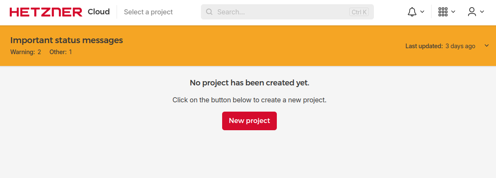 click “Create server”: 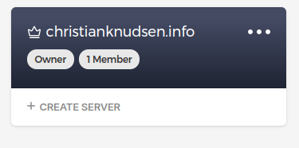
And chose a datacenter with a location you like. I like locations that are in countries not run baboons on ketamine.
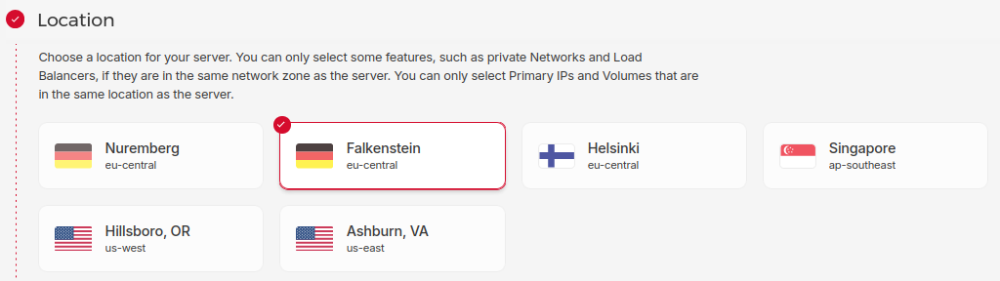 We now need to chose the image we want to install. I prefer Ubuntu - that is the same I’m running at home.
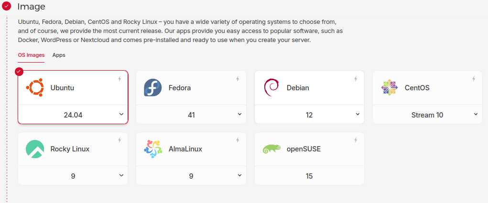
Chose a size. Even with a lower payment, I get more compute, memory and storage with the smallest option, than I did at the american service I’m leaving.
Og så skal vi have amd - for vi får lyst til at installere rstudio, og den er kun tilgængelig i experimentelle daily builds for arm64. Så… Lidt dyrere. Men
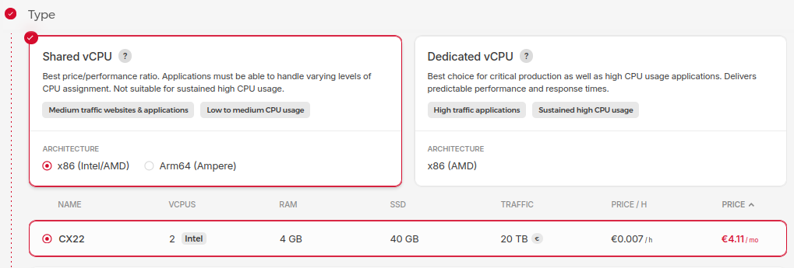
Here you should opt in to pay a little bit more for the IPv4-address from the start. Otherwise you will have to click around to find out where to add it later.
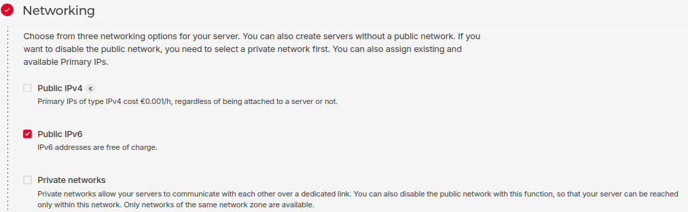
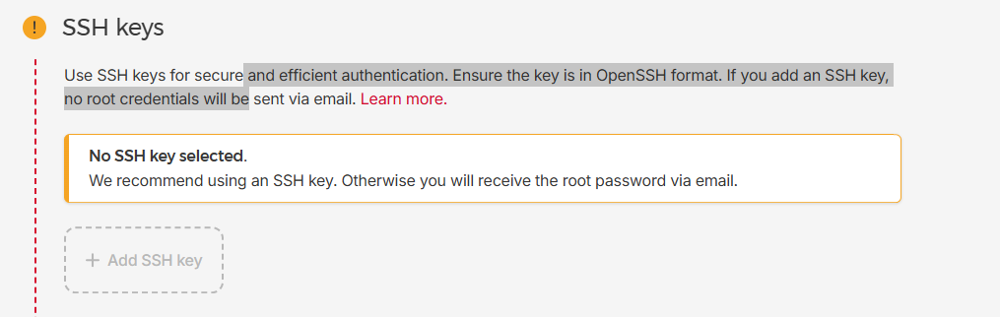
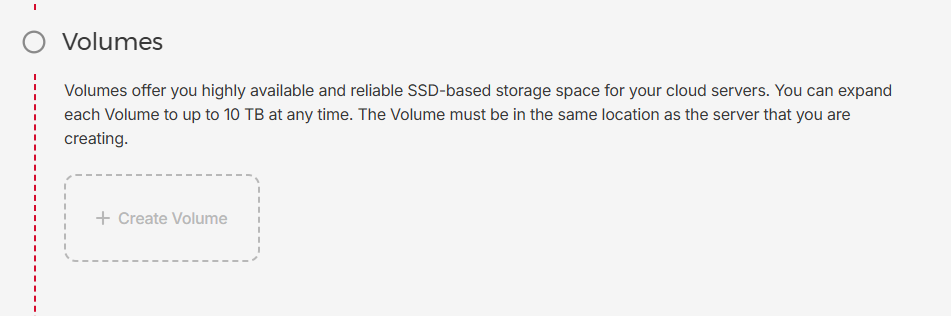
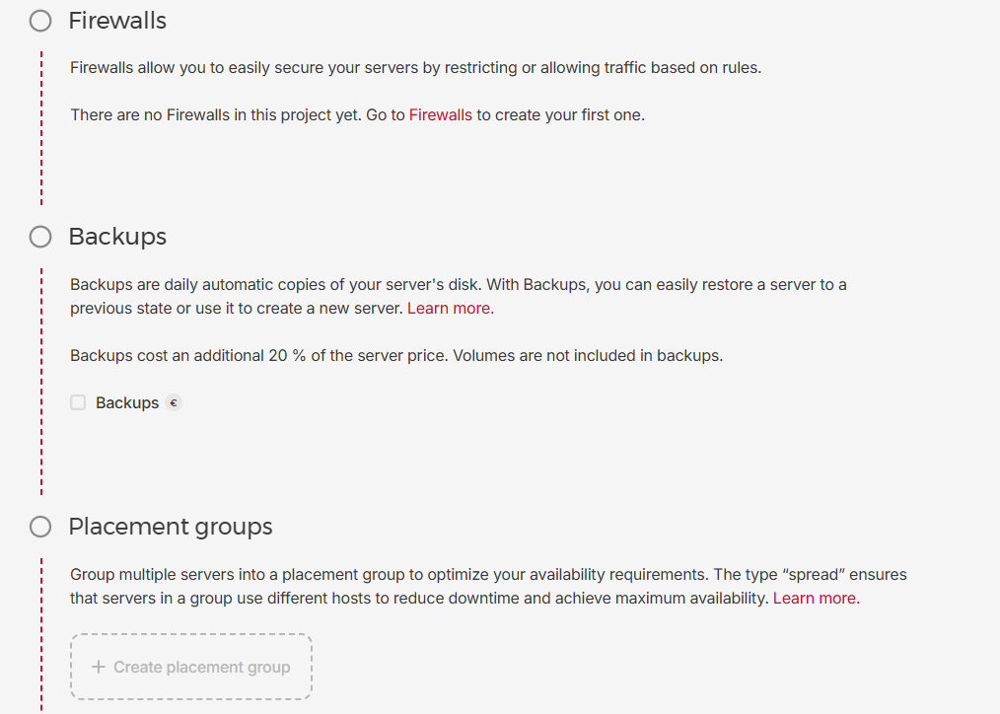
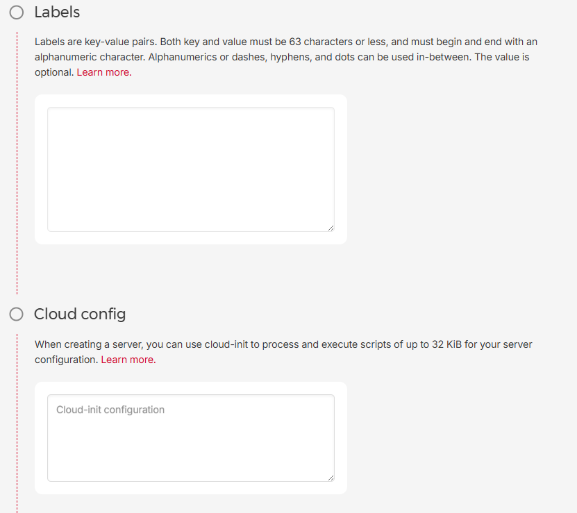
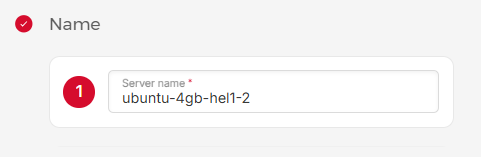
We get a password and an ip-number by mail, and ssh to it.
ssh root@123.456.789.012The root password have to be changed immediately.
Having done that, we add a user:
adduser nusseand add this user to the sudo group:
gpasswd -a nusse sudo We then change to that user:
su - nusseIt is now time to update the system:
sudo apt update
sudo apt upgradeNext we install a webserver. I prefer nginx.
sudo apt -y install nginxWe can test that it’s working by visiting the ip-adress we got in a browser
Now we have a webserver running!
When we make changes in the setup of the server, and we will, we can stop, start, restart and reload it running one of these commands:
sudo service nginx stop
sudo service nginx start
sudo service nginx restart
sudo service nginx reloadNext I would like to install R.
When doing that, the install files are signed with a key. We begin by retrieving it, and adding it to our package manager:
wget -qO- https://cloud.r-project.org/bin/linux/ubuntu/marutter_pubkey.asc | sudo tee -a /etc/apt/trusted.gpg.d/cran_ubuntu_key.ascWe can verify the key:
gpg --show-keys /etc/apt/trusted.gpg.d/cran_ubuntu_key.ascAnd according to: https://cran.r-project.org/bin/linux/ubuntu/fullREADME.html
We should get this fingerprint:
E298A3A825C0D65DFD57CBB651716619E084DAB9.From the R-project website, we get an url to the repository from where we are going to download R. We add it to our packagemanager:
sudo add-apt-repository "deb [arch=arm64] https://cloud.r-project.org/bin/linux/ubuntu $(lsb_release -cs)-cran40/"We now update and upgrade the system (again):
sudo apt update
sudo apt upgradeAnd can now install R:
sudo apt -y install r-baseWe check that R is actually running:
R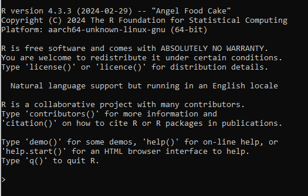 It is! (never mind the screenshot the actual result at time of writing is R v. 4.5.0)
Its nice to have devtools installed in R. That comes with a set of dependencies.
sudo apt -y install libfontconfig1-dev libharfbuzz-dev libfribidi-dev
sudo apt -y install libfreetype6-dev libpng-dev libtiff5-dev libjpeg-dev
sudo apt -y install libcurl4-gnutls-dev libxml2-dev libssl-dev
sudo apt -y install r-base-devNow it’s time to install some R packages.
We can either install them in R. In that case, they will be installed in the current user-home directory, and only be available to him.
If we install it as root, they will be available to every user on the system.
Begin by installing devtools
sudo su - -c "R -e \"install.packages('devtools', repos = 'http://cran.rstudio.com/')\""Take a cup of coffee. This takes time!
We are going to use tidyverse a lot. And the shiny package:
sudo su - -c "R -e \"install.packages(c('tidyverse', 'shiny'))\""I would like to get both rstudio and shiny servers installed.
There is yet another dependency, or rather, we need to install gdebi in order to even be able to install them:
sudo apt -y install gdebi-coreFirst, R-studio. We would like the latest version, and can find that at
https://posit.co/download/rstudio-server/
So - run:
wget https://download2.rstudio.org/server/jammy/amd64/rstudio-server-2024.12.1-563-amd64.debto download the rstudio-installation package.
And then install it with:
sudo gdebi rstudio-server-2024.12.1-563-amd64.debNext, the shinyserver. The latest version can be found at: https://posit.co/download/shiny-server/
So we run:
wget https://download3.rstudio.org/ubuntu-20.04/x86_64/shiny-server-1.5.23.1030-amd64.debAnd then:
sudo gdebi shiny-server-1.5.23.1030-amd64.debWe can check that stuff is working by visiting the server, at port 3838 and 8787:
´´´ 123.456.789.012:3838 123.456.789.012:8787 ´´´
Which should bring you to the shinyserver and the rstudioserver respectively.
So - now you have your own server, located in a civilized country, running rstudio and shinyserver.
Whats next?
Well, the actual goal was to move my website to this server. It is currently maintained on Github (another site that might have to be moved in the future)
So lets make a script that clones the repos containing my website, and my shiny-apps to this server from github.
Save this to “get_repos.sh” in “/usr/local/bin”. Make the file with:
sudo nano /usr/local/bin/get_repos.shand then copy-paste this. Remember to change the paths…
#!/bin/bash
# Get website:
REPO_URL="https://github.com/chrbknudsen/chrbknudsen.github.io.git"
LOCAL_REPO_PATH="/srv/git/chrbknudsen.github.io"
NGINX_PATH="/var/www/christianknudsen.info" #
# Check if local copy exists
# if not, clone the repo, Else, pull to update:
if [ ! -d "$LOCAL_REPO_PATH/.git" ]; then
echo "Local repo not found - cloning..."
/usr/bin/git clone $REPO_URL $LOCAL_REPO_PATH
else
echo "Updating local repo..."
cd $LOCAL_REPO_PATH
/usr/bin/git pull origin main
fi
# Having cloned/updated, we syncronise the files to the
# path where the webserver expects to find stuff:
rsync -av --delete $LOCAL_REPO_PATH/docs/ $NGINX_PATH
echo "Update done."
# Next the shiny apps
REPO_URL_SHINY="https://github.com/chrbknudsen/shiny.git"
LOCAL_REPO_PATH_SHINY="/srv/git/shiny"
SHINY_PATH="/srv/shiny-server"
# Check if local copy exists
if [ ! -d "$LOCAL_REPO_PATH_SHINY/.git" ]; then
echo "Local shiny repo not found - cloning..."
/usr/bin/git clone $REPO_URL_SHINY $LOCAL_REPO_PATH_SHINY
else
echo "Updating local shiny repo..."
echo "Changing directory"
cd $LOCAL_REPO_PATH_SHINY
echo "Directory changed"
/usr/bin/git pull origin main
fi
# Synchronising files to the root-folder of the shiny server.
sudo -u shiny rsync -av --delete --exclude '.git' --exclude '.*' $LOCAL_REPO_PATH_SHINY/ $SHINY_PATH/This needs to be executable:
sudo chmod +x get_repos.shAdd it as a cron job:
sudo crontab -eAnd add this line:
´´´ 0 * * * * /usr/local/bin/get_repos.sh ´´´
But don’t expect it to actually work. Note the final line where we sync the shiny apps. There is a user that needs to have the correct rights.
We create a group, “shinyuser”, and andd both my default username, and the “shiny” user to that group. Next we change the rights for the shiny-server app folder, in order for those users to have the correct rights:
sudo groupadd shinyuser
sudo usermod -aG shinyuser nusse
sudo usermod -aG shinyuser shiny
cd /srv/shiny-server
sudo chown -R nusse:shinyuser .
sudo chmod g+w .
sudo chmod g+s .Now we can expect the cron-job to run correctly. Lets try by running
sudo /usr/local/bin/get_repos.shWe would now like a nicer url. Having to enter an IP-number every time we want to run something is not nice.
This require us to setup different sites to be served by the webserver. nginx does this by having a file in the folder /etc/nginx/sites-available defining the server.
There is a default setup, but we will not use that.
Run this to edit a setup file:
sudo nano /etc/nginx/sites-available/your-domain.tldand paste this into it:
server {
listen 80;
listen [::]:80;
root /var/www/your_domain/html;
index index.html index.htm index.nginx-debian.html;
server_name your_domain www.your_domain;
location / {
try_files $uri $uri/ =404;
}
}Remember to change the values after “server_name” to match your domain.
Also change the line “root /var/www/your_domain/html” to match where the files you want served is. In this case it should be “/var/www/christianknudsen.info”
When we have done that, we have a site that is available for the server. But it is not enabled. We do that by making a sym-link in the folder
/etc/nginx/sites-enabled/
With this command
sudo ln -s /etc/nginx/sites-available/your_domain /etc/nginx/sites-enabled/We now check that the setup is correct by running
sudo nginx -tAnd can then restart the server with:
sudo service nginx restartIf we setup more than one server name, we can run into problems unless we adjust a single value in the /etc/nginx/nginx.conf file.
Open the file:
sudo nano /etc/nginx/nginx.confLocate the line “server_names_hash_bucket_size” and remove the “#” symbol to uncomment the line.
This, however does not make it possible to enter the name of your domain. Go to whoever manages your domain, and change the A-records to point to the IP-adress you got from Hetzner.
After that - it works, but there are still two issues. First of all any modern browser will tell you that you are visiting an unsafe site, because you have not set up an ssl-certificate. That is what give you a https adress. Also - we do not have nice urls to rstudio and shinyserver.
We begin with nicer urls.
Open the file defining your server:
sudo nano /etc/nginx/sites-available/you-domain.tldand add this at the top - before the line “server”
map $http_upgrade $connection_upgrade {
default upgrade;
'' close;
}Next, add this, inside the server parentheses:
location /shiny/ {
proxy_pass http://127.0.0.1:3838/;
proxy_http_version 1.1;
proxy_set_header Upgrade $http_upgrade;
proxy_set_header Connection $connection_upgrade;
rewrite ^(/shiny/[^/]+)$ $1/ permanent;
}
location /rstudio/ {
proxy_pass http://127.0.0.1:8787/;
proxy_http_version 1.1;
proxy_set_header Upgrade $http_upgrade;
proxy_set_header Connection $connection_upgrade;
}Now your-domain.tld/rstudio will point to your rstudio server. And /shiny to the shiny-server. Still not with a secure connection.
Run
sudo nginx -tto test that you did it correctly, and then reload the settings:
sudo systemctl reload nginxNow we have to get ssl setup.
We have to install certbot, and this comes from another package manager, snap. Run this to install snap:
sudo snap install core; sudo snap refresh coreAnd now we can install it:
sudo snap install --classic certbotIt’s nice to just be able to type certbot to run it. We ensure that by:
sudo ln -s /snap/bin/certbot /usr/bin/certbotBefore actually making the certificates, we setup a firewall that can handle https traffic: run
sudo ufw statusto see the status of the firewall. In my case, it was not enabled. Enable it by:
sudo ufw enableAnd then add a couple of profiles to allow https traffic:
sudo ufw allow 'OpenSSH'
sudo ufw allow 'Nginx Full'Now we can run certbot and get our certificates:
sudo certbot --nginx -d your-domain.tld -d www.your-domain.tldIt is important that you somewhere in the sites-enabled folder have a file with at server block matching the name of the domain you request a certificate for. Otherwise certbot will add stuff to your default server setup, and that makes it difficult to administrated later.
Check that stuff is correctly setup:
sudo nginx -tAnd realod the server settings:
sudo systemctl reload nginxBy default the certificate is only valid for 90 days. So we check that certbot has setup renewal for us:
sudo systemctl status snap.certbot.renew.serviceAnd do a dry-run of the renewal:
sudo certbot renew --dry-runThats it!